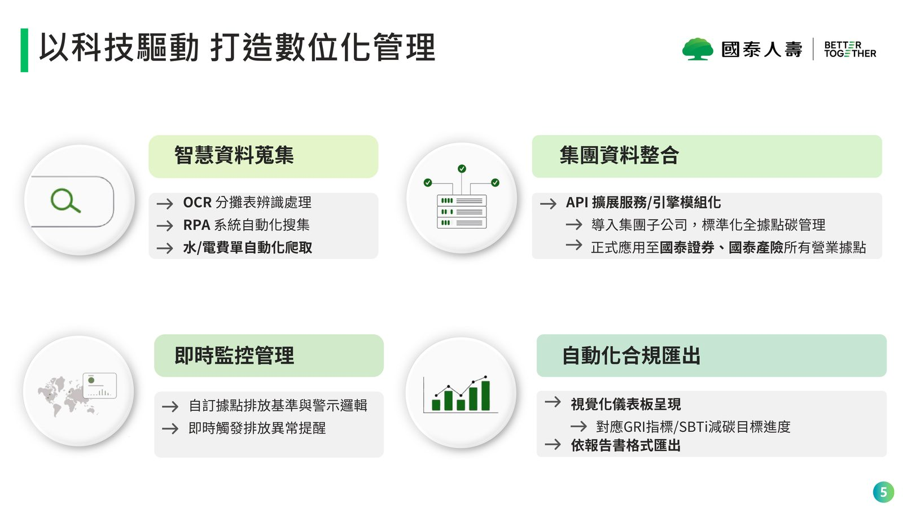
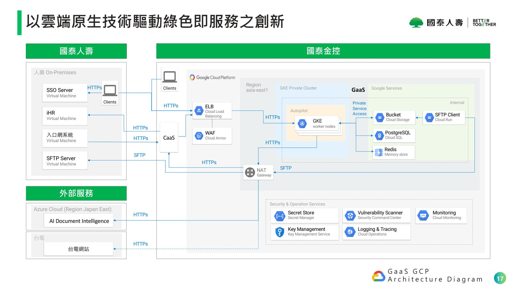
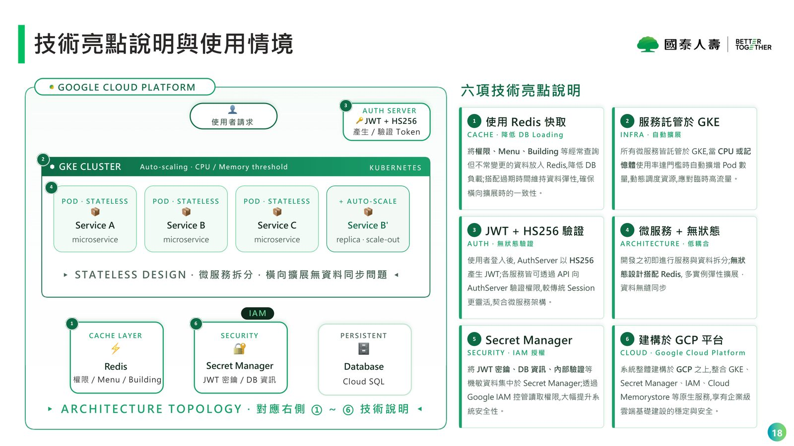
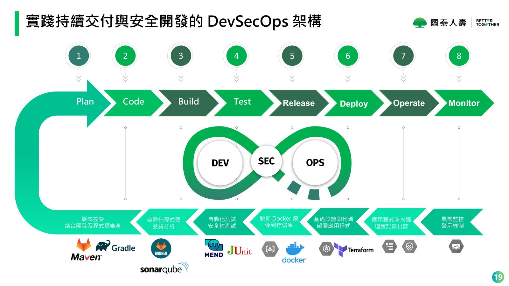

摘要
本場演講探討金融業面對龐大據點碳排放熱點監控、國際碳披露（GRI、IFRS）及科學減碳目標（SBTi、RE100）的數位碳治理挑戰。國泰人壽分享其開發之「GaaS 雲端碳管理平台」，架構於 Google Cloud Platform (GCP) 上，運用 GKE 進行無狀態微服務託管。系統結合 Redis 快取層降低 Cloud SQL 負載，並以 Azure AI Document Intelligence (OCR) 與 RPA 自動化進行多據點單據數據萃取，克服人工登打瓶頸。安全與運維端整合 GCP Secret Manager、IAM 及 DevSecOps 自動化開發流程。此實戰經驗提供金融與服務業以模組化雲端原生架構，將原始能源與碳排數據轉化為合規、可追溯且具第三方驗證力的科學化減碳決策與綠色金融資產。
重點整理
- GaaS 平台三大功能：環境管理/監測、國際合規性支援（ISO 14064-1、ISO 14067、SBTi、RE100）、以及溫室氣體盤查（組織型碳盤查、產品型碳足跡計算）
- 平台可支援 ESG 報告揭露（IFRS/GRI），自動彙整輸出格式並提供第三方查核依據，強化 ESG 評等可信度
- 架構建構於 Google Cloud Platform，採用 GKE Private Cluster、Cloud Armor、Cloud SQL、Cloud Storage 等原生服務，並串接台電網站與 Azure AI Document Intelligence
- 六項技術亮點：Redis 快取降低 DB 負載、GKE 自動擴展、JWT + HS256 無狀態驗證、微服務與無狀態架構、Secret Manager 集中管理機敏資訊、全面建構於 GCP
- 實踐 DevSecOps 全流程（Plan、Code、Build、Test、Release、Deploy、Operate、Monitor），並取得 ISO 27001 與 Stevie Awards 等肯定
重點圖片／架構圖




GaaS 平台的三大核心功能
GaaS（國泰雲端碳管理平台）以「科技驅動的碳智能與合規實踐」為核心定位，提供三大功能：環境管理/監測，可全據點掌握碳排熱點與異常，並靈活設定追蹤減碳專案目標；國際合規性支援，涵蓋 ISO 14064-1、ISO 14067 溫室氣體與產品碳足跡標準，以及 SBTi、RE100 等減碳目標框架；以及溫室氣體盤查，支援組織型碳盤查（範疇 1 與 2 排放源）與產品型碳足跡計算及碳中和評估。
從數據出發的科學化減碳
平台強調將原始數據轉化為科學化的碳智能，透過完整的數據治理流程，將分散的營運數據轉換為可追蹤、可驗證的碳排放與減碳目標數據。此設計目的是支援企業以數據為依據，落實科學化的減碳目標設定與追蹤，同時支援 ESG 資訊揭露所需的 GRI 與 SBTi 對應格式輸出，並提供查核依據以供第三方驗證，藉此強化企業 ESG 評等的可信度。
雲原生架構設計（GCP Architecture）
GaaS 架構圖顯示系統建構於 Google Cloud Platform 之上，採用 GKE Private Cluster 作為核心運算平台，搭配 Cloud Armor 與 WAF 進行邊界防護、Cloud SQL（PostgreSQL）作為資料庫、Cloud Storage 搭配 SFTP 進行檔案交換，並整合 Secret Manager、Key Management Service、Cloud Monitoring 與 Security Command Center 等維運與安全服務。系統同時與國泰人壽內部 On-Premises 環境、台電網站以及 Azure 上的 AI Document Intelligence 服務進行跨雲串接。
六項技術亮點
講者說明六項關鍵技術設計：使用 Redis 快取權限、Menu、Building 等常查詢但不常變更的資料以降低資料庫負載；服務全面託管於 GKE，依 CPU/記憶體使用率自動擴增 Pod 數量因應高流量；採用 JWT + HS256 進行無狀態身份驗證，較傳統 Session 更契合微服務架構；系統從設計之初即拆分為微服務並採無狀態設計，搭配 Redis 可支援多實例彈性擴展；透過 Secret Manager 與 Google IAM 集中管理 JWT 密鑰、資料庫資訊等機敏資料；整體建構於 GCP 之上，享有企業級雲端基礎設施的穩定與安全性。
DevSecOps 與永續成果
平台導入完整的 DevSecOps 流程，涵蓋 Plan、版本控管、程式碼審查、基礎設施即代碼、自動化測試與安全性測試、Docker 映像發佈、應用程式防火牆，以及連續日誌記錄與異常監控警示，實踐持續交付與安全開發並重的維運模式。國泰人壽在此基礎上累積多項里程碑，包含平台上線據點數與盤查案件數的成長，並取得 ISO 27001 資訊安全管理認證與 Stevie Awards 等國際肯定，展現金融科技賦能綠色永續轉型的具體成果。